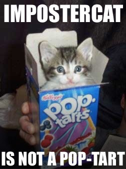

Culture
Don't Stereotype Me Bro
"Stereotype threat is a situational predicament in which people are or feel themselves to be at risk of confirming negative stereotypes about their social group." -Wikipedia: Stereotype Threat
With roots likely in race and gender topics, the idea of stereotype threat can theoretically be applied to numerous social structures. For example, why is the imposter syndrome so widespread in coding circles? Is it because programmers might create a divide between the elite and the lower class? Is it because programmers might be naturally hard on themselves? Is it because ranking someone's coding progress could be inherently difficult?
These questions are interesting to consider. However, I'd argue it can be more valuable to discuss the how's instead of the why's. How is it that using a stereotype, such as an 'imposter', can seal its own fate?

I don't mean to over-simplify a well-studied psychological phenomena. But I wonder if the effect could be wrapped up in something as simple as 'will power.' A journey towards an achievement doesn't begin with a first step. It begins with believeing the achievement is possible. If this is the case, then one must consider the implications of the opposite: when someone thinks they can't achieve something. Being told we can't, whether directly or through stereotype, should have the same effect on our mind as being told we can. Whether or not I think that's how things should be is for another time. But for now, I'd argue that what we're told, both positive and negative, carries significant weight when it comes to making up our own minds.
Being told we can't, whether directly or through stereotype, likely has the same effect on our mind as being told we can. Whether or not I think that's how things should be is for another time. But for now, I'd argue that what we're told, both positive and negative, carries significant weight when it comes to making up our own minds.

The reason I relate to the idea of imposter syndrome, and it's potential to fulfill its own prophecy, is because I've experienced it. And with little reseach, I've found I'm not alone. I could go into the deails of why, but I'd like to heed my own comments and just consider the how's. Why? Because I can't act on why's, and they'll likely lead down a path of self-pity. But if I consider the how's, then I can begin to understand the invisible force. How it works, how to respect it, and how to ensure it doesn't have control over me.
For now, my way of combatting it to only measure myself against myself. Armed with a growth mindset, I simply work on improving my education day-by-day. There will always be someone smarter than me, and I'm unaffected because they aren't my metric - I am. Mix that with an attainable goal, such as becoming a full-stack web developer, and I'm free to practice my trade unaffected by other's opinions. And, perhaps most importatntly, unaffected by impact that could have on my own potential.